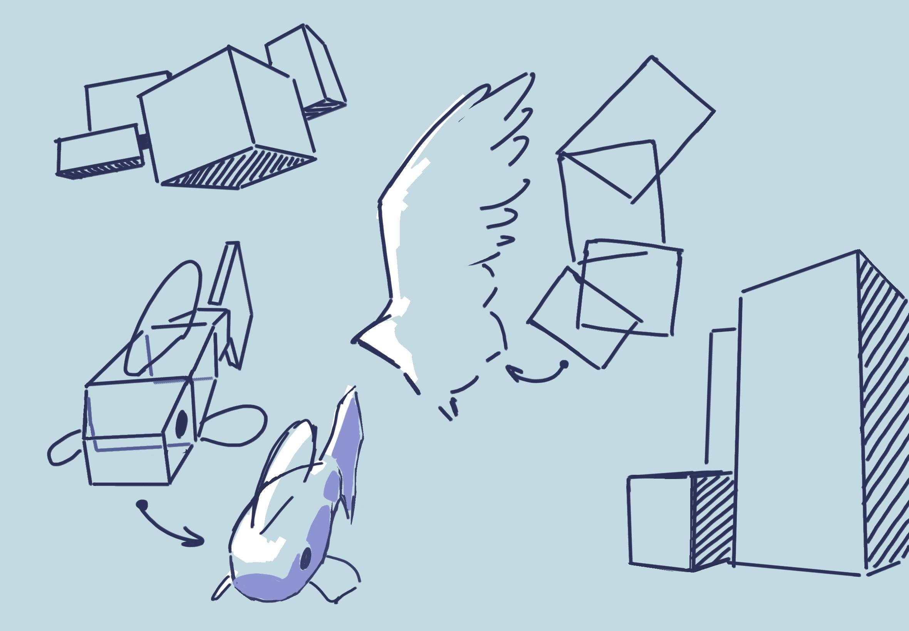
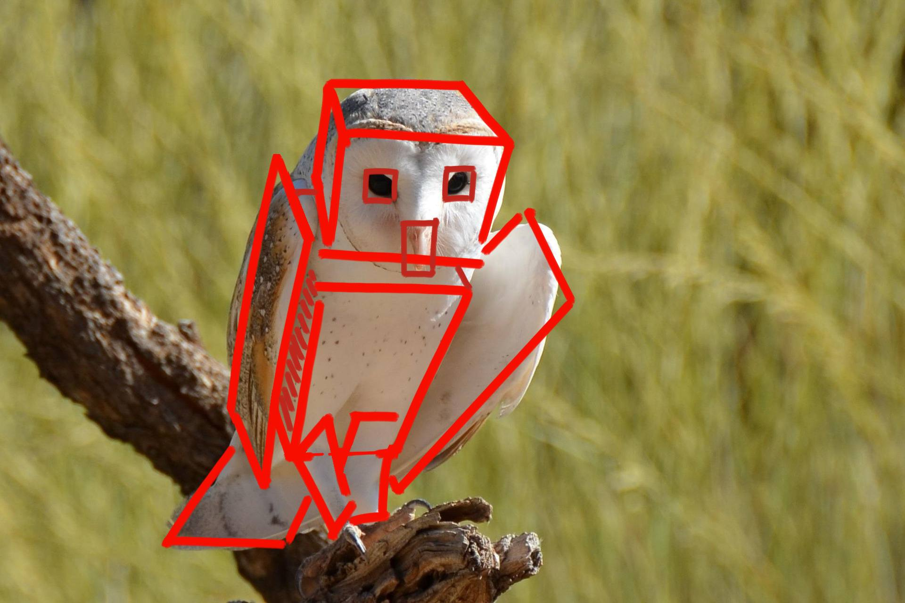
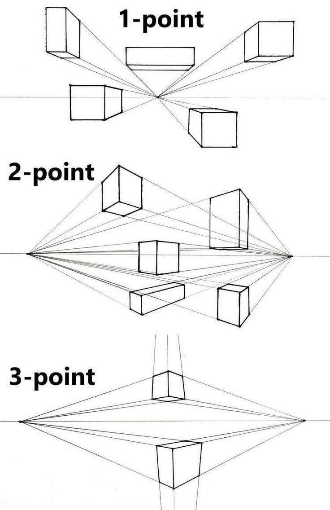
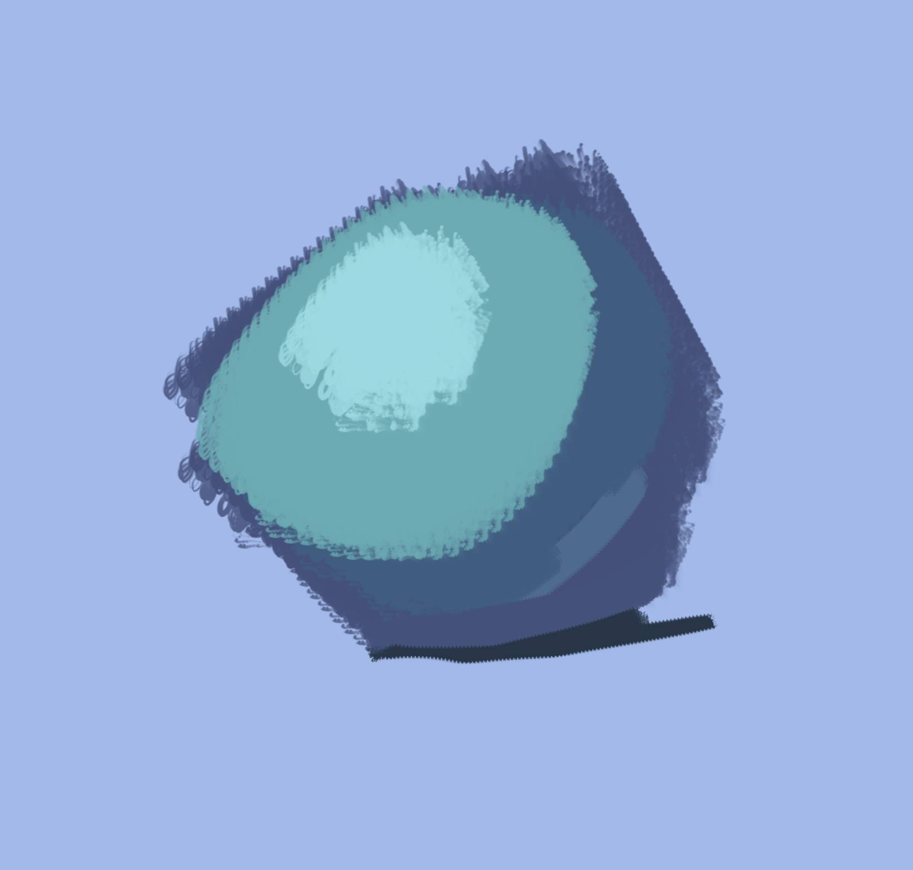
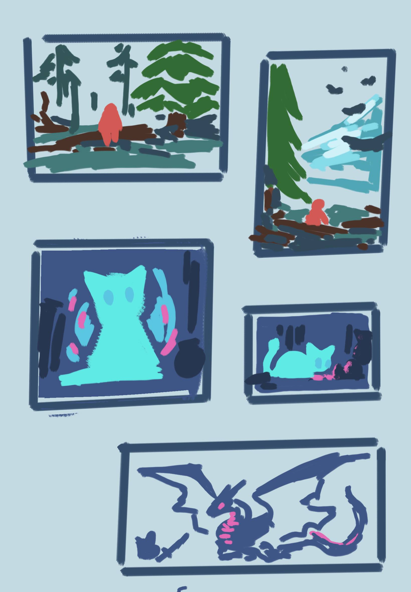
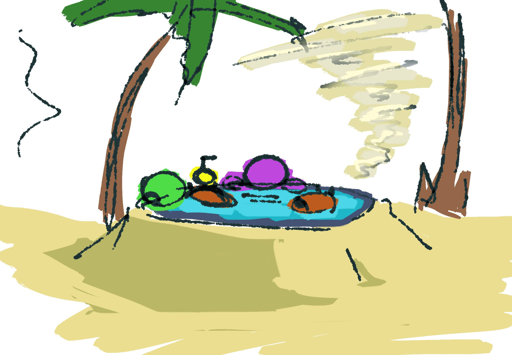
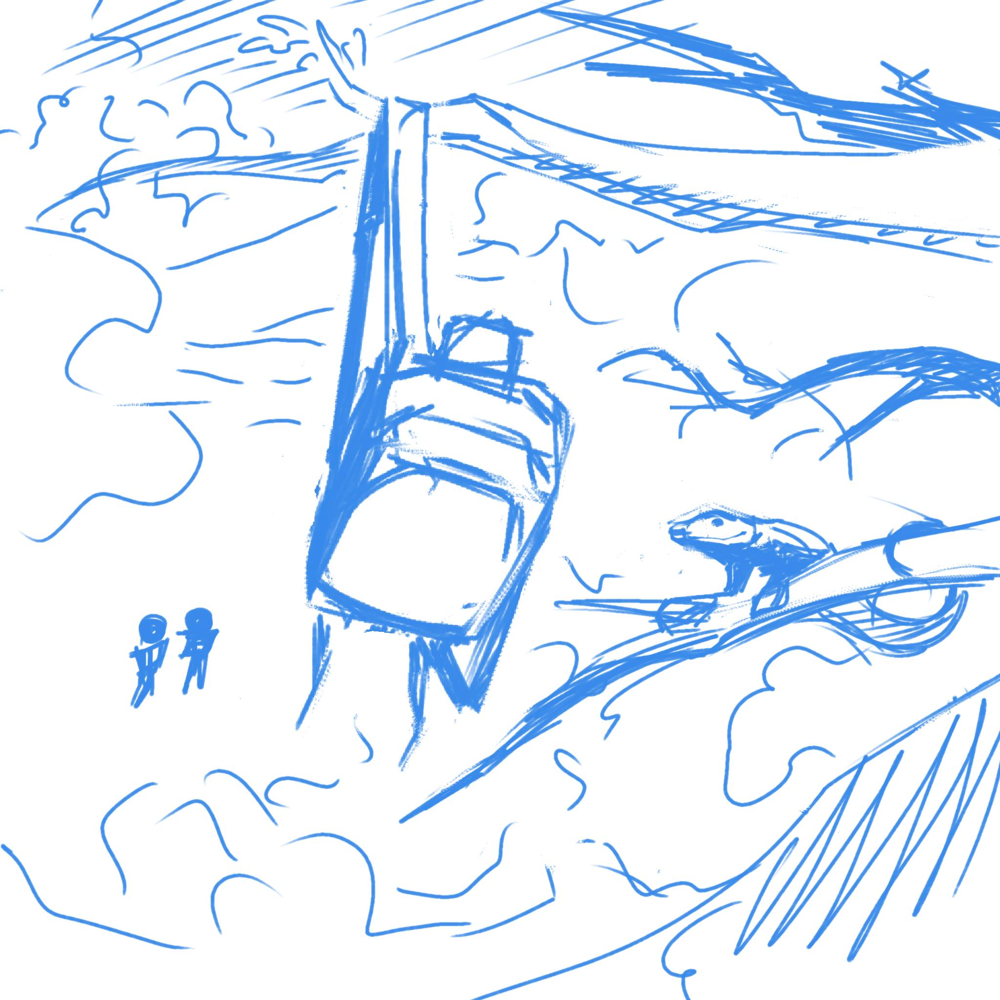
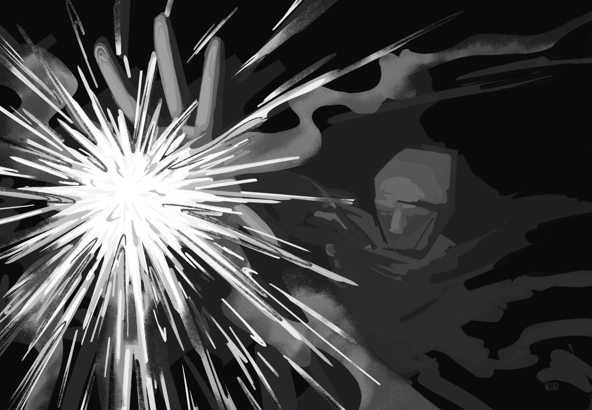
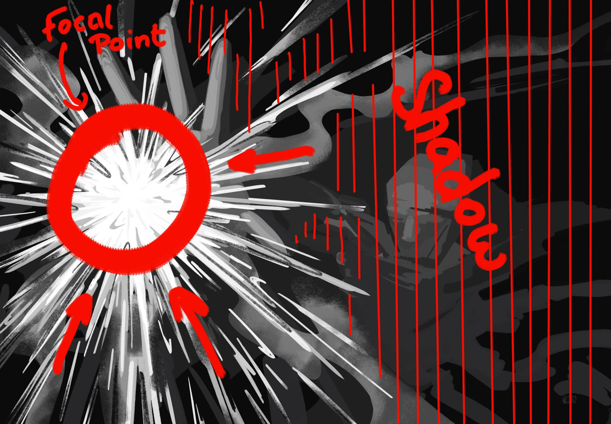

Introduction
The famous question of how to draw.
First let’s take an overview. To gain any skill you have to understand it. You can do it by mimicking and trying to replicate it, whilst breaking down the fundamentals on which the thing you’re trying to grasp stands on.
So here we’re gonna take a look on the break down and take a look at the components that form the core foundation of creating picture using your little paws.
1. Everything is a Cube
Everything can be simplified into a cube. And similar to LEGO construction blocks – you can build using those cubes: other basic shapes, you can build objects, things, surroundings, and once you’ve build the bigger picture you can get into details step by step.
Using cubes it’s much easier to perform perspective and measure proportions. As well it helps you understand light better on simpler forms first.


Perspective is just converging points. Therefore it can be one point, two, three or even four point perspective. Proportions are simple enough, per say you just count how many apples are in a vase.

Light usually can be broken down into object shade, contact shade, reflection, half light, light and a highlight.
Light Breakdown:
- Object shade
- Contact shade
- Reflection
- Half light
- Light
- Highlight

TOP
2. Putting It All Together
Using cubes we can form more complicated forms. Usually it’s cutting the cubes, stacking them, and sort of like forming a sculpture on paper.
Starting rough with bold lines and cubes as construction blocks is gonna help you determine the bigger picture more easily. After that you get into more details step by step.
Cubes itself make it easier to think in a 3 dimensions – which is important on paper. We have to imagine and calculate how exactly one object or another is build from the inside. Not always drawing what we cannot see but understanding where it belongs.
TOP3. Finishing Drops
Building your scene and tying the objects together is as important as understanding how to structure things you want to draw. This is the determination of object placement, value and color. It’s all formed around the idea, even if it’s not planned beforehand.
It is preferable to outline your idea and make a plan to communicate the idea to other human beings – get all of the important details that help you best.
The most effective way is creating thumbnails first – which are just a small pictures that potentially could be transformed into the main piece you want to create. Writing is good, but when you see how the picture plays out it’s much easier to fix, understand, mess around and develop it further.
The goal of these thumbnails is to understand which angle, relation of the objects, values and colors work best.



There are templates with main focal points and the flow that will help you with making your artwork pop.
The lines represent where most focus, most details, objects – or simply where the weight of the scene lays.
The simplest rule is do not cut in converging points. Do not create crosses. Maintain somewhat of a box in relation to the paper with a bit more space on the top.
Values I consider the most important. They make your art pop out, and not blend all of the objects in a messy thing.
Even color is not as important, because whilst it is better to understand the color wheel, relations and combinations – you still have to get your values right first, because color itself is not gonna fix it.


Talking about color one of the best thing you could do, is limiting yourself to three colors, and draw only with them. When you get used to it more you can move on to more complicated stuff like going round the color wheel when drawing.
There are some tips: using a single color, 2 opposites, or a triangle of colors. They are useful and are fundamentals as well.a
But once again – if you don’t get your values right, no amount of color is going to help you out.